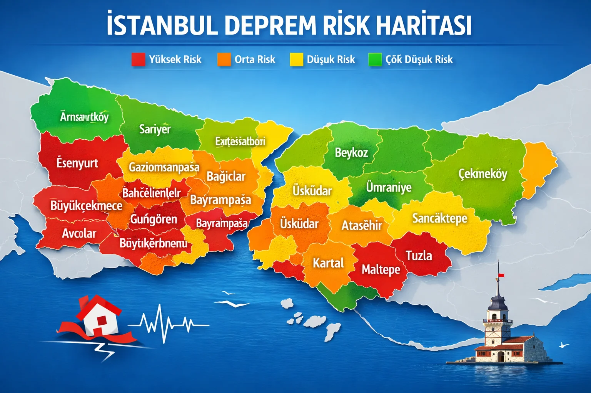

İstanbul Deprem Haritası – Hangi İlçeler Riskli?
İstanbul'un 39 ilçesi, deprem riski açısından büyük farklar gösteriyor. Zemin yapısı, fay hattına mesafe ve bina stokunun yaşı üçlüsü risk profilini belirliyor. İşte detaylı ilçe haritası.
En Yüksek Risk: Marmara Sahili İlçeleri
Avcılar, Küçükçekmece, Bakırköy, Zeytinburnu, Fatih, Beyoğlu, Beşiktaş — Marmara sahilinde, alüvyon zemin ve eski yapı stoku ile en yüksek riskli bölge. KAF'ın Marmara kolu 10-20 km yakınlıkta. 1999 Gölcük depreminde Avcılar'da 500+ bina çökmüştü. 2023 öncesi yapım binalar özellikle risk taşır.
Yüksek Risk: Avrupa Yakası Merkez
Esenyurt, Büyükçekmece, Arnavutköy, Eyüpsultan, Bayrampaşa, Kağıthane — yoğun nüfus + orta yaşta yapı stoku + belirsiz zemin. Esenyurt özellikle plansız yapılaşma tarihi nedeniyle dikkat çekiyor.
Orta Risk: Anadolu Yakası
Kadıköy, Üsküdar, Ümraniye, Kartal, Maltepe, Pendik, Tuzla — daha sert zemin (kuvars ve tortul) + nispeten yeni yapı stoku. Marmara fayından uzaklaşınca risk düşüyor. Yine de sarsıntı etkisi yüksek.
Görece Düşük Risk: İç ve Kuzey İlçeler
Sarıyer, Beykoz, Çekmeköy, Sancaktepe, Şile, Silivri (kuzey) — kayaç zemin, fay hattından uzak, yapı kalitesi iyi. Yine de dikkatli olmak gerekir — İstanbul'da %100 güvenli bölge yoktur.
Zemin Etkisi Neden Önemli?
Alüvyon zemin (sahil ve dere yatakları) deprem dalgalarını 3-5 kat güçlendirir. Kayaç zemin sarsıntıyı olduğu gibi iletir. Aynı depremi Kadıköy'de Mw 5.0, Avcılar'da Mw 6.0 gibi hissedebilirsiniz — merkez aynı olsa bile.
Kendi İlçenizin Detayını Görün
Her İstanbul ilçesinin kendi özel dinamikleri var. İstanbul deprem sayfamızda detaylı ilçe haritası ve risk değerlendirmesi var. Kendi binanızı test etmeyi öğrenin — ilçe risk seviyesinden daha önemlisi sizin binanız.